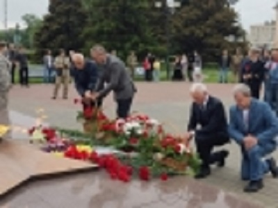
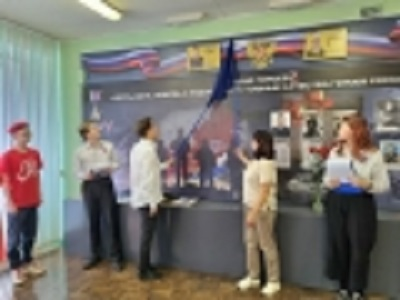
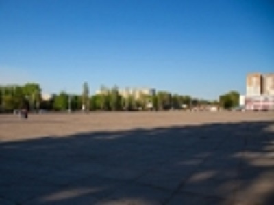
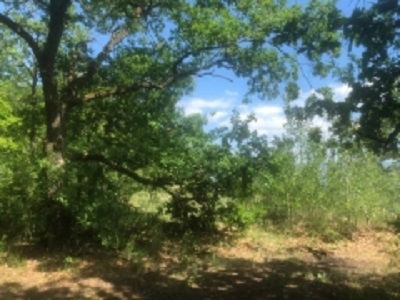

Новости
В МФЦ Тольятти заработали центры приема обращений граждан
С сегодняшнего дня в Тольятти начали свою работу центры приема обращений граждан. Об этом сегодня в ходе аппаратного совещания сообщил глава городаНиколай Ренц. Они функционируют на базе 15 Многофункциональных центров во всех районах города.
Отметим, эта работа ведется по поручению врио губернатора Самарской области Вячеслава Федорищева с целью организации более оперативного взаимодействия населения с органами власти. Уже сегодня жители Тольятти могут подать письменное обращение в адрес врио губернатора Самарской в отделениях МФЦ, расположенных по следующим адресам:
Автозаводский район
- ул. Юбилейная, 4
- ул. Революционная, 52А
- бульвар Королева, 13
- ул. Ворошилова, 33
- ул. Автостроителей, 5
- ул. 40 лет Победы, 14
- ул. 40 лет Победы, 33Г
Центральный район
- ул. Мира, 84
- ул. Мира 166
- ул. Голосова, 26А
- ул. Толстого, 34
- ул. Горького, 65
Комсомольский район
- ул. Ярославская, 35
- ул. Никонова, 22
Микрорайон Поволжский
- ул. Новосадовая, 23
Уточнить адрес и время работы ближайшего отделения МФЦ можно по телефону «горячей линии»: 51-21-21.
В Тольятти прошли мероприятия в рамках Дня памяти и скорби
Накануне Дня памяти и скорби, активисты местного отделения Движения "Волонтеры Победы", а также общественных центров гражданско- патриотического воспитания из КУиЭ и КТиХО, вместе с активистами Движения Первых на территории Паркового комплекса им. К.Г. Сахарова создали Огненную картину войны, в память о тех, кто отдал свои жизни во имя мира и свободы. Огненные картины войны напоминают нам о страшных испытаниях, которые пришлось пережить нашему народу.
В три часа утра на площади Свободы началась акция памяти, посвященная 83-й годовщине начала Великой Отечественной войны.Почтить память павших героев пришли заместитель главы Тольятти - глава администрации Центрального района Дмитрий Ботаев, молодые бойцы 3-й отдельной гвардейской Варшавско-Берлинской Краснознамённой орденов Суворова, Жукова и Кутузова бригады специального назначения под руководством врио командира Андрея Новика, проректор Тольяттинского государственного университета по молодежной политике, воспитательной работе и фандрайзингу Елена Щелокова, заместитель ректора, директор Гуманитарно- педагогического института ТГУ Юрий Лившиц, представители ассоциации защитников Отечества «Застава», тольяттинского отделения общественной организации ветеранов «Боевое братство», студенты, выпускники школ и представители городской общественности.
На площади Свободы состоялось памятное мероприятие, участниками которого стали представители городской администрации, городского совета ветеранов войны, депутаты, волонтеры Победы, городская общественность. Жители Тольятти собрались у Обелиска Славы, чтобы вспомнить тех, кто отдал свою жизнь, защищая Родину, кто трудился в тылу, кто бросался под танки и своим телом закрывал от неприятельского обстрела стариков, женщин и детей.
«Честь, долг, любовь к Родине – вот главные качества героев»
21 июня в школе №28 состоялось торжественное мероприятие, посвященное открытию доски памяти выпускнику Никите Мечтанову.
В годы учебы одноклассники и учителя не думали, что с Никитой придется прощаться так рано. Что ему суждено стать Героем России и навсегда вписать свое имя золотыми буквами не только в историю школы, но и в историю своей страны.
- Никита писал о себе в выпускном альбоме: «Я молодой, веселый, отзывчивый парень. Обожаю жизнь, обожаю КВН, обожаю спорт, особенно футбол и хоккей», - вспоминает учитель Никиты Елена Обухова. - Очень грустно и тяжело, что сегодня мы снова выпускаем Никиту, прощаемся с ним. Но память о нем останется в наших сердцах и в стенах родной школы навсегда. Огромное спасибо и низкий поклон маме нашего Героя, его бабушкам, которые вырастили такого замечательного человека.
После окончания школы Никита поступил в Военно-технический институт Тольятти, но после его закрытия учился в Самарском архитектурно-строительном институте. Затем была срочная военная служба, после прохождения которой Никита служил в МЧС города Тольятти, самоотверженно тушил пожары любой сложности.
С первых дней СВО боец с позывным «Мечта» был в составе роты специального назначения бригады разведки. Воевал в Донецкой и Луганской республиках, на Запорожье и Херсонщине, участвовал в освобождении Каховской ГЭС. Никита прошёл обучение в Екатеринбурге и получил специальность оператора БПЛА. Он одним из лучших в боевой группе «Днепр» и самым результативным оператором дронов-камикадзе. За ним буквально охотились укронацисты.
29 и 30 октября в районе Крынок «Мечта» уничтожил 8 лодок и до 50 украинских бойцов. Противник постоянно вел контрбатарейную борьбу, в ходе которой от разрыва артиллерийского снаряда ефрейтор Мечтанов получил ранение, несовместимое с жизнью. 24 апреля 2024 года Указом Президента РФ Никите Григорьевичу присвоено звание Герой России посмертно. Он похоронен в Севастополе на Аллее Героев.
Светлая память! Вечная слава!
Неожиданный взгляд на Тольятти: в краеведческом музее представили новую сувенирную продукцию города
.jpg)
Создать серию сувенирных линеек, которая бы презентовала наш город не только среди местных жителей, но и была бы интересна туристам. Такую цель ставили перед собой идейные вдохновители проекта «Тольяттинский акцент» - победителя конкурса «Креативный музей» благотворительной программы «Музей без границ» Благотворительного фонда Владимира Потанина. Чтобы продукция была по-настоящему оригинальной и раскрывающей идентичность Тольятти, к большой работе присоединились дизайнеры и хранители истории, студенты и преподаватели ТГУ, представители туриндустрии и бизнеса. Результаты 1,5-годовалого труда были представлены на минувшей неделе в Краеведческом музее Тольятти.
Итак, линейки новой городской сувенирной продукции:
«Чувствуй город» - это взгляд молодого дизайнера на Тольятти. Молодежь видит, как за монотонностью бетонных коробок открываются интересные визуальные объекты городской среды.
«История Ставрополя-Тольятти» - это некоторые факты из истории города, представленные «в картинках» на настольных салфетках, ежедневниках, брелках, обложках паспорта, в значках, пазлах и др.
«Тольятти - родина единорогов» посвящена факту обитания на нашей территории эласмотериев - вымерших миллионы лет назад млекопитающих, «предков» носорогов, у которых был только один «рог».
«Знаменитые люди» - известные личности, чьи имена связаны с историей нашего города, но изображены они не в назидательном виде - «жил, посетил», а сделаны более запоминающимися.
«Тольятти - властелин колец» - сувениры про единственный в России город, удивляющий приезжих автомобилистов 26 кольцевыми развязками. Тонко подмечена еще одна сторона - наша масштабность: на некоторых кольцах можно поместить Красную площадь или, например, 10 Пизанских башен.
- Я очень рад, что наш краеведческий музей стал площадкой для такого проекта, который объединил многих заинтересованных людей. И вам действительно удалось показать, что Тольятти очень стильный, креативныйи современный город и эти сувениры подчёркивают наш потенциал. А запрос со стороны туристов, да и самих горожан на такую продукцию очень высок, - отметил заместитель руководителя управления туризма администрации Тольятти Алексей Поручиков.
Добавим, что партнерами проекта выступили компания «Ричмарк», пекарня «Саламатов» и Центр дизайна Тольяттинского государственного университета.
В Тольятти обсудили концепцию благоустройства Центральной площади
Глава города Николай Ренц провел рабочую встречу с представителями городской общественности, АВТОВАЗа, Сбербанка и ряда других социально ответственных организаций, обсудив предварительную концепцию реконструкции Центральной площади.
Обращаясь к участникам, Николай Альфредович отметил, что знаковый для нашего города объект вызывает достаточно много споров. Многие выступают за ярмарку, есть и те, кто против. Площадь старая, требует обновления и совершенно другого, современного подхода.
- По инициативе президента АО "АВТОВАЗ" Максима Юрьевича Соколова наш город посетил главный исполнительный директор Сбербанка Герман Оскарович Греф. Во время его визита мы обсудили возможность участия в программе «Фонтаны Сбера». В рамках этой благотворительной деятельности банк строит фонтаны в разных городах России. Самые известные из их находятся в Дербенте, где недавно состоялось открытие, и в Смоленске к юбилею русского композитора Михаила Ивановича Глинки, - рассказал глава города.
Отметим, при обсуждении возможности размещения фонтана в Тольятти, было предложено сразу несколько вариантов: рядом с Поволжской академией образования и искусств имени Святителя Алексия; в 32-м квартале, недалеко от Спасо-Преображенского собора, а также на склоне у памятника В.Н. Татищеву. Однако в итоге было принято решение о том, что фонтан должен располагаться в том месте, где имеется возможность для проведения массовых мероприятий и организации множества интересных зон и локаций. С этой точки зрения лучше всего подходит Центральная площадь, которая располагается рядом с парком и ДК «Тольятти» им. Н. В. Абрамова.
- Мы решили подготовить видение того, как фонтан может быть расположен на этой площади, как бы изменилась эта территория с учетом фонтана, как ее реконструировать. Готовим предварительное предложение в адрес Сбербанка. Очень признателен Герману Оскаровичу за то, что он согласился рассмотреть нашу заявку. Конечно, мы надеемся и на помощь правительства Самарской области, но для этого необходимо представить интересную концепцию. Безусловно, когда она будет готова, мы ее опубликуем, чтобы жители могли оценить, поделиться своими замечаниями и предложениями. Вы знаете, что сейчас на этой площади уже есть фонтан со скульптурным образом Николая Чудотворца, звонница, которую мы в этом году восстановили, часовня. Также необходимо сохранить и парковку для зрителей, которые приезжают на концерты в ДК «Тольятти». Территория требует серьезного благоустройства. Несомненно, она должна выглядеть торжественно, красиво и позволять проводить на ней масштабные и интересные мероприятия. Прорабатывался вопрос и о переносе ярмарки. Среди вариантов: ул. Базовая и ул. Ларина, рынок Центрального района. Если будут приняты все правильные решения, то мы ставим себе задачу начать реконструкцию площади в 2025 году, а завершить ее уже в 2026-м, - резюмировал Николай Альфредович.
О правилах утилизации погибших животных
Напоминаем, что приказом министерства сельского хозяйства Российской Федерации №626 от 26.10.2020 года утверждены ветеринарные правила обращения с биологическими отходами, включая трупы животных. Согласно пункту 33 данных правил, погибших животных запрещается хоронить в земле, вывозить на свалки, сбрасывать в бытовые мусорные контейнеры, а также выбрасывать в поля, леса, овраги и водные объекты.
Нарушение ветеринарно-санитарных правил сбора, утилизации и уничтожения биологических отходов влечет наложение административного штрафа:
- на граждан в размере от 4000 до 5000 рублей;
- на должностных лиц - от 20000 до 40000 рублей;
- на лиц, осуществляющих предпринимательскую деятельность без образования юридического лица - от 40000 до 50000 рублей или административное приостановление деятельности на срок до 90 суток;
- на юридических лиц - от 500000 до 700000 рублей или административное приостановление деятельности на срок до 90 суток.
С 2023 года в Тольятти действует муниципальный контракт между администрацией городского округа и подрядной организацией ООО «ВетФаворит» по организации мероприятий по подбору и утилизации трупов животных. В рамках этого контракта все обнаруженные на поверхности территорий общего пользования трупы животных без владельцев утилизируются. Подрядчик осуществляет передачу трупов животных для последующей кремации на основании соответствующего договора.
Для домашних животных действует правило, по которому владелец вправе самостоятельно выбирать организацию, осуществляющую приём трупов домашних животных для последующей утилизации (кремации). Данные услуги оказываются различными организациями города, в том числе ветеринарными клиниками.